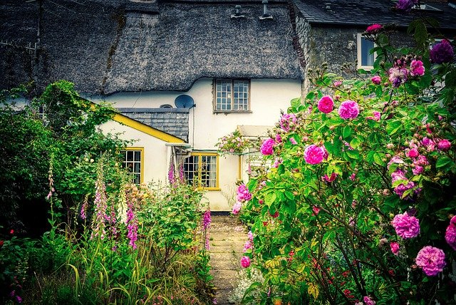

EnglishGarden
イングリッシュガーデンって何?
イングリッシュガーデンとは、草花や樹木を自然な雰囲気で保ち、人の手を加えすぎない自然美を大切にした、イギリス式の庭園のことを指しています。
そもそも、洋風の庭の形式には、次の3つが代表的です。
イギリス式庭園
イタリア式庭園
フランス式庭園
歴史的には、16世紀にイタリア式ができ、そこから発展して
17世紀から18世紀の間にフランス式と、イギリス式が生まれました。
イタリア式とフランス式は共通して、「幾何学模様」「左右対称」といった、人工的な様式美を重んじていますが、
それに対してイギリス式は自然で野趣に富んだ風景を重んじています。
春や秋にバラ園に行く方も多いかと思いますが、
多くのバラ園ではイングリッシュガーデンの形式が取り入れられています。
関連商品
カラフルプランター
カラーは6色★★★★☆
¥600(税込み)
多肉植物
小ぶりでかわいらしい多肉植物サイズはS，M,Lの3種
★★★★☆
¥600(税込み)
イングリッシュフラワー詰め合わせ
人気の種類の詰め合わせ★★★★★
¥2,500(税込み)
イングリッシュガーデンの作り方
✴︎ボーダーガーデンのスタイルを取り入れる✴︎
ボーダーガーデンとは、イングリッシュガーデンのスタイルのひとつで、草丈の高い草花を後方(塀や壁際)に配置し、背の順で草丈の低い草花を手前(小道側)に植える方法です。
ボーダーガーデンにならって草花を植えると、あくまで自然でありながら、空間に広がりをもたせ、あらゆる美しい花を鑑賞できます。
✴︎エクステリアは自然素材を選ぶ✴︎
庭には、フェンスや通路などのエクステリアがあるかと思いますが、これらも自然素材を意識してください。
通路は石、木の板、レンガなど自然のものを使うようにして、コンクリートや人工的なタイルは避けましょう。
他にもベンチやテーブルなども木材のものを選ぶといいです。
もしくはアール・ヌーヴォーの意匠が取り入れられたアイアン製のものもおすすめです。
✳︎アンティークオーナメント(置物)を取り入れる✳︎
イングリッシュガーデンには、天使やうさぎなどのオーナメントを置くのもおすすめです。
本来は石造りですが、最近では合成樹脂をアンティーク加工したものも多く、比較的安価で手に入ります。
PR

FunGardenPerfume
¥6.800
Make Like Beautiful
輝き続ける毎日をここから始める
イングリッシュガーデンにおすすめの植物は？
バラ
バラはイングリッシュガーデンの定番の花で、カラーも豊富にあり、庭を彩ってくれます。
モッコウバラは立派に育つのでおすすめです。
また、つるバラであれば、アーチや壁に這わせることで豪華な庭になります。
バラを植えると一気に洋風の庭になり、おすすめの植物です。
ラベンダー
ハーブの一種であるラベンダーは花が大きすぎず、紫の見た目がキレイです。
ラベンダーを密集してたくさん植えられていると、良い香りも楽しめます。風で揺れる様子もきれいなのでおすすめです。
緑と紫のコントラストが庭全体を美しく見せますので、植えてみませんか。
湿気には弱いので、蒸れないように剪定をしてください。
デルフィニウム
デルフィニウムは初夏に青や紫、ピンクや白などの花色で咲く多年草です。
とくにエラータムと呼ばれる系統の品種は、花穂が長く、草丈も1m前後になるので、ボーダーガーデンの後方によく植えられています。
アメジストセージ
アメジストセージは秋から冬にかけて、長細い花茎に紫の花をつけます。
草丈が1m前後なので、ボーダーガーデンの後方や中間に植えます。
花期以外はシルバーリーフとしても楽しめるので、ぜひイングリッシュガーデンで植えたい草花です。
シルバーリーフ
シルバーリーフはイングリッシュガーデンには欠かせません。
例えばシロタエギクや、ラムズイヤーなどを植えておくと、花が少ない時期でも美しい庭の景観を楽しむことができます。
アイビー
アイビーは星型のような切れ込みがはいる葉を伸ばす、つる性の多年草です。
とても丈夫で、日本の気候でもよく育ち、ほふくするように伸びていきます。
生い茂ると野趣に富んだ庭になり、よりすてきなイングリッシュガーデンが楽めます。
パンジーとビオラ
秋から春にかけて、長期間花を咲かせてくれるパンジーとビオラは、花が少なくなる冬の時期のイングリッシュガーデンを彩る草花です。
背丈が低いので、ボーダーガーデンでは手前に植えられます。
ジギタリス
ラベンダーのように華奢な花ですが、ベル状になった花が愛らしい植物です。カラーバリエーションが豊富なので庭の色どりに向いています。
ペチュニア
ガーデニングの定番といえばペチュニアというほど、カラーも豊富で育てやすい植物です。
背丈は低いですが花期は長いので、長く庭を楽しませてくれます。
関連商品
イングリッシュガーデンを上手につくるコツとは?
✴︎花を規則正しく並べすぎない✴︎
イングリッシュガーデンを上手につくるポイントは、規則正しく植物を並べないことです。
配置は気をつけましょう。規則正しく植物を並べたり、一箇所に同じ花をまとめすぎてしまうと、イングリッシュガーデンの自然美からは遠ざかるので、気をつけましょう。
ボーダーガーデンを意識しながら、自然に植えるように散らばせましょう。
また色が散らばるようにすることもポイントです。
赤の花はここ、青の花はここ、と色でまとめすぎるのではなく、自然に色が散らばるようにすると美しく見えます。
✴︎いろんな種類の花を植える✴︎
イングリッシュガーデンでは、パンジーのような背丈の低い花ばかりを植えるのではなく、背丈の高いものや、縦のラインで咲く花など、いろんな形の植物を植えるといいでしょう。
なお、庭を遠目で見て、どのあたりになにを植えるか、事前に計画しておくといいです。
やみくもに庭に地植えしてしまうと、花の色が偏ってしまうなど後悔することがありますので、可能であれば庭の設計図のようなものを作りましょう。
✴︎生活感のあるもの・人工物は置かない✴︎
イングリッシュガーデンには人工物は合わないので、あまり置かないようにしてください。
プラスチックのジョウロやバケツ、物干し竿などは、イングリッシュガーデンの景観を損ねるので避けましょう。
庭には自然素材のもののみを置くといいです。
石、土、木が素材のものであれば問題ありません。
Garden event

Knowrige
精油の奥深い世界を知ろう

Fun
面白いガーデンを紹介します。

Taste
あなたのお好みのハーブティーは？
.jpg)
Care
おすすめのボディーケアを紹介します